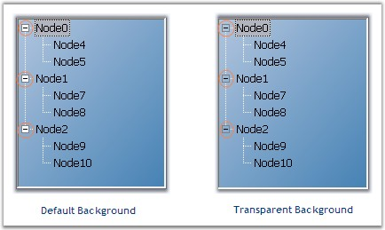
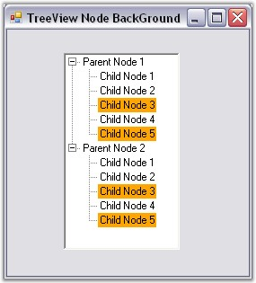
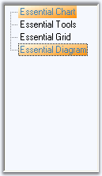

TreeView control lets you customize its background with colors and image.
Background Colors
The below properties sets the background color for the treeview and also the node text.
|
TreeViewAdv Properties |
Description |
|
BackgroundColor |
Indicates the background color of the control. It provides options to set style, backcolor, forecolor, gradientcolor and gradient styles. |
|
BackColor |
Indicates the background color of the text and the graphics of the control. |
 Note: The Background property is available
for individual nodes also.
Note: The Background property is available
for individual nodes also.
Background Image
Use the BackgroundImage property to specify a custom image as the background of the chart. The image layout can also be specified using the properties below.
|
TreeViewAdv Properties |
Description |
|
BackgroundImage |
Indicates the background image that can be used for the control. |
|
BackgroundImageLayout |
Indicates the layout for the background image in the control. |
More Customization for PlusMinus Controls
The controls in the TreeViewAdv like PlusMinus control will have a transparent background, if the TransparentControls property is set to true.
|
TreeViewAdv Properties |
Description |
|
TransparentControls |
Indicates if the control will have a transparent background. |
|
[C#]
this.treeViewAdv1.TransparentControls = true; |
|
[VB.NET]
Me.treeViewAdv1.TransparentControls = True |

Figure 1145: TransparentControls property Illustrated
Themed TreeView Control
Themes can be enabled for the control by enabling ThemesEnabled property. This can also be enabled for individual nodes also by using the TreeNodeAdv.ThemesEnabled property.
|
TreeViewAdv Properties |
Description |
|
ThemesEnabled |
Indicates if the control is drawn themed. |
|
TreeNodeAdv Properties |
Description |
|
ThemesEnabled |
Indicates if the node control will be themed. |
To draw the node's background, users need to turn on OwnerDrawnNodesBackground property, in the TreeViewAdv and then listen to the tree's NodeBackgroundPaint event which will be called for each node. This can be implemented by using the following code snippet.
|
TreeViewAdv Properties |
Description |
|
OwnerDrawnNodesBackground |
Indicates if the NodeBackgroundPaint event will be fired before drawing a node's background. |
|
TreeViewAdv event |
Description |
|
NodeBackgroundPaint |
This event when fired, paints the background of the node, when OwnerDrawNodes property is set to true. |
|
[C#]
this.treeViewAdv1.OwnerDrawNodesBackground = true; // Background Paint Event private void treeViewAdv1_NodeBackgroundPaint(object sender, TreeNodeAdvPaintBackgroundEventArgs e) { if (e.Node.Index == 2 | e.Node.Index == 4) { Syncfusion.Drawing.BrushInfo br = new Syncfusion.Drawing.BrushInfo(Color.Orange); e.BrushInfo = br; } } |
|
[VB.NET]
Me.treeViewAdv1.OwnerDrawNodesBackground = True ' Background Pain Event Private Sub treeViewAdv1_NodeBackgroundPaint(ByVal sender As Object, ByVal e As TreeNodeAdvPaintBackgroundEventArgs) If e.Node.Index = 2 Or e.Node.Index = 4 Then Dim br As Syncfusion.Drawing.BrushInfo = New Syncfusion.Drawing.BrushInfo(Color.Orange) e.BrushInfo = br End If End Sub |

Figure 1146: "Orange" color background for Node Index 2 and 4
Painting the active and inactive nodes
Background for the selected node can be set using SelectedNodeBackground property. The selection rectangle gets grayed out when the TreeViewAdv loses focus. If the user still wishes to maintain the node's active colors, then the InactiveSelectedNodeBackground and InactiveSelectedNodeForeColor properties can be set.
Note: HideSelection property should be set to false to effect this
setting.
|
TreeViewAdv Properties |
Description |
|
SelectedNodeBackground |
Paints the background of the selected node. |
|
InactiveSelectedNodeBackground |
Indicates the background of the selected node when the control is not focussed. |
|
InactiveSelectedNodeForeColor |
Indicates the text color of the selected node when not focussed. |
|
[C#]
this.treeViewAdv1.InactiveSelectedNodeBackground = new Syncfusion.Drawing.BrushInfo(Syncfusion.Drawing.GradientStyle.ForwardDiagonal, System.Drawing.Color.Ivory, System.Drawing.Color.DarkOrange); this.treeViewAdv1.InactiveSelectedNodeForeColor = System.Drawing.Color.SteelBlue; |
|
[VB.NET]
Me.treeViewAdv1.InactiveSelectedNodeBackground = New Syncfusion.Drawing.BrushInfo(Syncfusion.Drawing.GradientStyle.ForwardDiagonal, System.Drawing.Color.Ivory, System.Drawing.Color.DarkOrange) Me.treeViewAdv1.InactiveSelectedNodeForeColor = System.Drawing.Color.SteelBlue |

Figure 1147: Inactive Nodes painted with OrangeRed and Ivory Background with SteelBlue Foreground